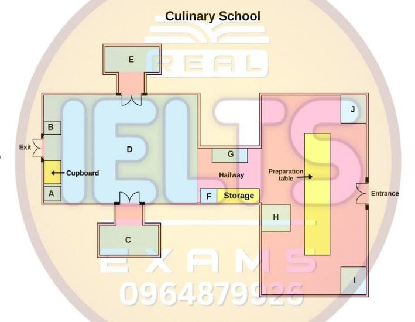

Phiếu trả lời Listening
Bấm số câu để nhảy tới câu đó. Bài làm được tự lưu trên máy này. Thời gian thi thật: khoảng 30 phút.
PART 1 Questions 1–10
Complete the notes below.
Write ONE WORD AND/OR A NUMBER for each answer.
Shipping of personal belongings Example: Special boxes for packing are provided free of charge The company will transport:
The company will not transport:
Additional services:
Example of price:
Payment options:
Documentation needed:
|
📜 Lời thoại Part 1
Now turn to Section 1 on page 2 of your question booklet. Section 1 You will hear a man phoning a shipping company to ask about its services. First you have some time to look at questions 1 to 6 on page 2. You will see that there is an example that has been done for you.
On this occasion only, the conversation relating to this will be played first. Hello, Move It Shipping. Hi, I'd like a few more details about your services please.
Certainly. I've been on your website looking into sending some things abroad when I go away to study next term. I see that you provide special empty boxes so that I can pack them myself and you then transport them.
That's right. We provide those free of charge. The company provide boxes for packing, so boxes has been written in the space.
Now we shall begin. You should answer the questions as you listen because you will not hear the recording a second time. Listen carefully and answer questions 1 to 6. Hello, Move It Shipping.
Hi, I'd like a few more details about your services please. Certainly. I've been on your website looking into sending some things abroad when I go away to study next term.
I see that you provide special empty boxes so that I can pack them myself and you then transport them. That's right. We provide those free of charge.
And can I ask what goods you can transport? Like, do you take electrical goods? Well, it depends. If you've got something like a computer, that's fine. But things like washing machines and fridges are too heavy and bulky for our service.
No, I wouldn't be taking that sort of stuff. You can always check with us if there's anything you're not sure about including. I was wondering about my bicycle.
I suppose that'd be too bulky. No, that's fine, though we wouldn't be able to take a motorbike. Sure.
Is there anything else you don't take? Well, basically, the service is restricted to what one man can lift, so 40 kilogrammes is the maximum for each package. We do have a list of particular things we can't transport on our website, but I'll tell you the main points. So, in order to comply with security regulations, we don't take any sort of liquids, and we also don't accept any type of foods.
And if you provide your own containers, rather than using ours, we only allow certain types. So, can I use cardboard containers? Yes, they're OK if they're strong enough, but we won't carry things that have been packed in plastic containers. They crack and break so easily that our policy is simply not to take them.
OK, fine. And once I've packed everything, you can collect my things from my home and deliver them to wherever I live abroad, is that right? Yes, and we do have some special services. For example, we can make special arrangements to deliver on Saturdays if that's more convenient for you.
Or, if you're in a hurry, we have an express delivery option. There's a surcharge for these services, of course, but it's very reasonable. OK, I'll keep that in mind.
And what happens if the delivery can't be made for some reason, like if I haven't finalised my accommodation? Can you keep my stuff for me for a few days? Yes, we can arrange storage, though again there would be an extra charge for that. Sure. Before you hear the rest of the conversation, you have some time to look at questions 7 to 10 on page 2.
Now listen and answer questions 7 to 10.
And can you give me an idea of your prices? Of course. Roughly how much would you want transported? Say, for example, I had 15 boxes, and I've also got a violin. That would need packing with special care, I think.
OK, and it would be collection in the UK? Yes, and Sweden would be the destination. OK, I'll do a quick calculation. Let me just get that up on the screen.
Fifteen boxes, and one special package. Let's see. It'd be something in the order of £575.
Right. And how would I pay that? Well, you can pay by debit or credit card over the phone, or if you prefer to pay in cash, you can just give it to the driver when he arrives to collect your belongings, and he'll give you a receipt. Fine.
And at the same time, you'll need to hand over some documentation, so you'll need a copy of your passport. A photocopy? That's right. So make sure you get that done in advance, and have it ready with you.
Then there are also some papers you'll need that we'll send you in advance, so that you can get them completed in good time. The most important ones are the insurance documents, so you need to have filled in all the... That is the end of Section 1. You now have half a minute to check your answers.
PART 2 Questions 11–20
Questions 11–16
Which special feature does each of the following cooking tours and classes have?
Choose SIX answers from the box and write the correct letter, A–H, next to Questions 11–16.
Special features
A cook with one particular ingredient
B learn about food history
C have individual cooking lessons
D make meals for college students
E prepare healthy meals
F go on a guided walking tour
G make time-saving meals
H go on an afternoon bus tour
Cooking tours and classes
11 Northern California
12 Italy
13 New Orleans
14 Budget Feasts
15 Cooking for Two
16 Variations on a Theme
Questions 17–20
Label the plan below.
Write the correct letter, A–J, next to Questions 17–20.

17 Oven
18 Refrigerator
19 Demonstration kitchen
20 Utensil cabinet
📜 Lời thoại Part 2
Now turn to Section 2 on page 3. Section 2 You will hear the director of a cooking school talking to a group of people about the different programmes.
First you have some time to look at questions 11 to 16 on page 3. Now listen carefully and answer questions 11 to 16. Welcome to the cooking school. I am Julie Brooks, head of programmes.
I'm here to give you information about the different tours and classes we offer, as well as to show you our cooking facilities here. Our tours and classes are very popular. The most popular cooking tour is in the early summer in Northern California, which is famous for its cheeses.
This four-day tour is special because each student receives one-on-one classes with the master chef. Then you'll take part in visits to the great cheese producers of the region, and you'll taste cheeses and see how they are made. If you're looking to take a really adventurous vacation, take one of our cooking vacations in Italy and learn the passion of the Italian kitchen and have fun doing it.
This cooking vacation takes place in a historic villa. There will be time to relax and enjoy the surroundings or to do some sightseeing in the area. On the second day, a bus excursion is organised, leaving after lunch with visits to a salami factory and an olive oil mill, returning to the villa in time for dinner.
On the third day, you go to the market, then cook your own dinner with a range of local ingredients. One of the school's most popular tours is to the famous U.S. city of New Orleans. This is a three-day tour, where you will be staying in a hotel near the city's famous French Quarter.
You'll have time to explore on your own before taking a unique city tour on foot, led by a local chef. Every afternoon there's a cooking class for the group at your hotel's professional kitchen. If you'd rather not spend the time to travel, we offer one-day cooking classes here at the school's state-of-the-art kitchen, taught by our very talented chefs.
In the budget feast class, you will learn how to make great tasting meals that don't have to break your budget or require a lot of preparation time. For big families, this helps a lot. Many couples take our Cooking for Two class when their children go off to college.
We teach how to make meals that are nutritious and elegant. They're even a bit romantic. In the class called Variations on a Theme, you learn to cook a variety of dishes using a specific ingredient in each.
For example, in the next class you will prepare meals using lemon. The lemon chicken meal is divine. Before you hear the rest of the talk, you have some time to look at questions 17 to 20 on page 4. Now listen and answer questions 17 to 20.
I'd like to give you a tour of our beautiful kitchen where the meals are made. Our one-day classes meet here. Just walk through the entrance.
Right, now you can see the large preparation table in the middle of the main kitchen. This beautiful table is large enough for 12 students to work on. This room also has a state-of-the-art oven.
It's large enough for up to 25 cakes. It's just past the preparation table on the left near the entrance to the hallway. Perishable items are kept in this industrial-sized refrigerator next to the storage in the hallway.
We keep non-perishable items in the storage. As you exit from the hallway, you'll come into the large demonstration kitchen. Here we hold smaller classes, but mainly it's used for cooking demonstrations and tasting events.
The last thing I want to point out is our utensil cabinet. It sits right next to the exit. It contains a variety of cooking pots and pans and an amazing range of forks and spoons.
Please feel free to stay around the school to check out our... That is the end of Section 2. You now have half a minute to check your answers.
PART 3 Questions 21–30
Questions 21–26
Choose the correct letter, A, B or C.
Bricks made from waste
21 Adele read the article about Bitublocks because
22 What does Adele think is the most innovative aspect of the manufacture of Bitublocks?
23 Ray was surprised to read that the Bitublocks are so
24 What do both Adele and Ray say about the manufacture of Bitublocks?
25 What insight did Ray get from reading about the hospital building?
26 Adele thinks the research into the hospital was included in the article to show
Questions 27 and 28
Choose TWO letters, A–E.
27–28 Which TWO things make Veggieblocks different from Bitublocks?
Questions 29 and 30
Choose TWO letters, A–E.
29–30 Which TWO things about the future of the construction industry do Adele and Ray agree on?
📜 Lời thoại Part 3
Now turn to Section 3 on page 5. Section 3 You will hear two engineering students called Ray and Adele discussing an article they have read about making building bricks from waste materials. First you have some time to look at questions 21 to 26 on page 5. Now listen carefully and answer questions 21 to 26.
Hi Adele. What are you reading? Oh, hi Ray. It's one of the articles on the reading list.
It's about bricks made from waste. Is that the one about bitu blocks? Yes, that's right. Apparently they're used as an alternative to concrete blocks.
They combine waste ash and crushed glass with a substance called bitumen. Yeah, I read it a couple of weeks ago. Really interesting.
It's going to be really useful for our next assignment. Yes, but I'm not doing that option. Actually, my tutor asked me to do a summary of the article for next week's seminar.
I really enjoyed it and think I might even look into the topic for my dissertation. Before I read it, I'd been getting rather bored of all these green innovations in building, using all manner of waste materials. But what's really new about this method is that they use bitumen to bind all the waste material and there's no need for a chemical reaction.
It's not as simple as it sounds, of course, but it's a great idea. Yeah, and the quality is pretty good. Of course, I knew that because of the way they're made.
They're extremely stable and the early tests indicate that they're as good as concrete blocks in terms of their weight. But I didn't expect them to do so well on water absorption tests. And there were some interesting points about their manufacture, weren't there? Yeah, they use materials from a variety of sources, some from local factories, some from further afield.
And they haven't had to develop any new methods of manufacture. Yeah, they essentially use existing ones, which is great because that means they won't require massive amounts of new investment. Right.
By the way, what do you think about the section in the article on the building of the new hospital? It really helped me understand the broad issues in the UK, that so much more material is used by builders than by other industries, which means the construction industry has a big and growing responsibility to use green materials. OK. Yeah.
I thought the reason why they included the hospital in the article was to show that there are already quite high levels of recycling going on in the building industry. I think it said 17 to 18 per cent by value. I know that sounds pretty poor, but it's a good foundation to start making improvements on, don't you think? Maybe.
Before you hear the rest of the discussion, you have some time to look at questions 27 to 30 on page 6. Now listen and answer questions 27 to 30. What did you think about the rival to bitchy blocks, veggie blocks? Yeah, bricks made out of waste cooking oil. Interesting.
But it did say they could be quite smelly, you know. OK. That's one of the drawbacks bitchy blocks don't have.
But the article said veggie blocks were very popular with certain architects. I presume because of cost? You'd think so. But actually veggie blocks come out at the same price and they take longer to make.
The thing is they look prettier. No. Bitchy blocks are dark brown, which means they normally have to be covered with a lighter facing, whereas the veggie blocks come out as a pleasant light beige, so they don't need covering.
Oh. So there are advantages and disadvantages with both types. Yeah.
So how do you think these innovations will change practises in the construction industry? Well, I think bitchy blocks have the potential to make a huge difference. I have my doubts. Basically builders are always going to be cautious.
Maybe. Architects are a different matter. They like to experiment with new ideas.
Yes, you're right. What about veggie blocks? Did architects cooperate in their trials? There was a bit of interest there, but not significant. I get the impression veggie blocks won't catch on as well as bitchy blocks.
I'm not sure. I think the key to commercial success will be things like tax breaks for any companies producing materials incorporating recycled materials. Yes, that's true.
It'll be interesting to see what happens anyway. So what do you know? That is the end of Section 3. You now have half a minute to check your answers.
PART 4 Questions 31–40
Questions 31–36
Complete the notes below.
Write NO MORE THAN TWO WORDS for each answer.
The archaeological site of Trimera Location
History
Rediscovery of site
Excavation
|
Questions 37–40
Complete the table below.
Write ONE WORD ONLY for each answer.
Important buildings
| Buildings | Where | Notes |
|---|---|---|
| Doric House | eastern area | inhabitants came here to collect |
| Theatre | next to a stone | capacity of 5,000 |
| Stairway | south-western area | has sculptures of |
| Roman Baths | central area | a statue of a Roman was found |
📜 Lời thoại Part 4
Now turn to Section 4 on page 7. Section 4 You will hear part of a student presentation about work on an archaeological site in southern Europe.
First you have some time to look at questions 31 to 40 on pages 7 and 8. Now listen carefully and answer questions 31 to 40. For my presentation, I'm going to talk to you about the archaeological dig I went on in the summer at the site of Trimora in southern Europe near the Mediterranean Sea. The site is backed by a range of mountains to the north, overlooking a green, fertile plain to the south.
Let me first give you an idea of the history of the area and the growth of the city. The first evidence we have of human settlement in the Trimora area is of hunter-gatherers around 12,000 years ago. Later, about 5,000 years ago, farmers settled along the many rivers which cut across the plain, and later still, from about 2,500 years ago, the city of Trimora was established, and it soon became a regional centre for trade.
The city was first invaded by the Greeks around 300 B.C., then the Romans in 100 B.C. Under the Romans, it became very prosperous and traded in grain, olives, and pottery. Then, in 518 A.D., an earthquake destroyed Trimora, and the city was abandoned. However, much of the city was covered with soil and rock by the earthquake, and so, luckily for us archaeologists, many of the ruins survived intact.
The first report on the ruins dates back to around 1706, when a French explorer passed through the area. He thought that what he was seeing were the ruins of a castle. In the 19th century, a British archaeologist began to explore the site, and later, a Polish count made the first map of the area and recorded some of the inscriptions which were visible on the surface.
However, it was not until 1982 that a Swedish archaeologist made a full survey of the ruins of Trimora. The first remains to be excavated were identified as those of the market. Archaeologists were trying to establish how trade was organised here and the type of goods which were commonly bought and sold.
In and around this area, various examples of silver coins have come to light. During the Roman period, it appears that the city was completely reorganised. The public squares were paved, as were the main streets.
There is also some proof to suggest that textile production was an important industry. The huge prosperity during this period was helped by the fact that the city was responsible for provisioning the Roman army in the eastern region. Now what I'd like to do is talk about some of the more important buildings in some detail.
First of all, the Doric House. This Greek building is located to the east of the city, near the copper mines. This building is where the local population would come to get their water.
The fact that the ruins were so well preserved has meant that the team of archaeologists excavating the site has been able to partially reconstruct the building. The remains of a theatre are to be found in the northwest of the city, adjacent to the river, where a magnificent bridge made of stone has recently been unearthed. In Roman times, the theatre appears to have been extended and may have been able to take up to 5,000 spectators.
In the southwestern corner of the city are the remains of an elegant stairway. It dates back to about 37 AD. The stairway is decorated with sculptures of lions, as opposed to bears, found in other parts of the site.
This is possibly because of trading links with Africa. Finally, the most recent discovery has been at the site of the Roman baths, in the central area of Trimura. Here, a huge statue of an emperor from the Roman period was excavated.
It appears to have been carved in pieces and then taken to the site and put together. The statue is very finely detailed, and the recent discovery of marble toes and the hem of a dress suggests that a companion statue may also be buried in the bath's site. During the dig, I was responsible for many... That is the end of Section 4. You now have half a minute to check your answers.
That is the end of the listening test. You now have ten minutes to transfer your answers to the listening answer sheet.
Phiếu trả lời Reading
Bấm số câu để nhảy tới câu đó. Bài làm được tự lưu trên máy này. Thời gian thi thật: 60 phút.
READING PASSAGE 1 Questions 1–13
You should spend about 20 minutes on Questions 1–13, which are based on Reading Passage 1 below.
Optimism and Health
If you have a positive outlook, the likelihood is that you will lead a longer life. John Nash examines the link between optimism and good health
Medical studies are concluding that optimists really do have something to be cheerful about. Coincidental links between Optimism and improved general health have been found by researchers. Recently, a Yale University psychologists’ study of 660 volunteers aged 50 and above was published. It found that thinking positively about ageing adds an average of seven years to a person’s life. The team, led by Dr Becca Levy, suggests that having an optimistic attitude can bolster the will to live, though they admit that they cannot explain it fully.
Another American research team, however, says they have identified a physical mechanism behind the phenomenon. Their eight-year study of 670 men aged about 63 found that the optimists had significantly better lung function than men who were more pessimistic. This is the first study to show such a link. The research team at Brigham & Women’s Hospital and Harvard Medical School believes that attitude somehow strengthens the immune system, and that adopting a more positive outlook may reverse physical decline. ‘Preliminary studies on heart patients suggest that by changing a person’s outlook, you can improve their mortality risk,’ says Dr Rosalind Wright.
The role of optimism in good health has long been noted but often sidelined. Sigmund Freud, the influential psychologist, equated optimism with ignorance, and from 1970 to 2000 there were 46,000 psychology papers on depression and only 40 on joy.
Part of that negativity may be blamed on optimists themselves. They are not necessarily fun to have around, says Brice Pitt, the Emeritus Professor of the Psychiatry of Old Age at Imperial College, London. ‘Optimists tend to be insufferable people. Always jolly, always up, and, frankly, they have a hopelessly rosy outlook’ he says. ‘Depressive people see things as they really are, and that is a disadvantage from an evolutionary point of view. Optimism is a piece of evolutionary equipment that has carried us a long way through millennia of setbacks.’
Studies show that optimists do better than pessimists in work, school and sports: suffer less depression, achieve more goals, respond better to stress and fight disease better. Among people aged from their mid-nineties into their hundreds, researchers generally fail to find consistencies in diet or exercise (and some still smoke). What the super-aged do tend to share, however, is a Positive, optimistic outlook.
Toshihiko Maruta, of the Mayo Institute, headed an earlier American medical study to find a link between optimism and longevity. Her study found that optimists live about 19 per cent longer than people with grim outlooks. ‘It tells us that mind and body are linked and that attitude has an impact on the final outcome: death,’ she says. That simple message might have far more effect than exhortations to eat fresh fruit and warnings to stay out of the sun.
Despite the benefits of unprecedented material wealth, the World Health Organisation estimates that depression is soon to become the second leading cause of disability. Popular wisdom blames this on our frenetically busy society. According to social forecasters at the Henley Centre, while people in developed countries are 65 per cent better off financially today than they were 15 years ago, there is no evidence that they are any more content with their lives. While much of this is down to the perception among many of being rushed and pressured for time and space, it is the perception not the reality that counts, they say.
The Henley researchers found that if people think they have enough time, space or money, they feel more relaxed about life, regardless of how much of these things they actually have. ‘In terms of money, some of the people who “feel” wealthiest, and some of those who “feel” poorest, actually have almost the same amount of money at their disposal. Their attitudes and behaviour patterns, however, are different from one another,’ says Chad Wallens, a researcher.
Few studies have tried to ascertain the proportion of optimists in the world. But a 1995 nationwide survey conducted in the USA for the American magazine Adweek found that about half the population counted themselves as optimists, with women slightly more apt than men (53 per cent versus 48 per cent) to identify themselves thus. That attitude drops, however, to less than a third of people between the ages of 55 and 64, which supports research showing that men, in particular, tend to become more irritable as they get older. Lynn Myers, a psychotherapist, points out, however, that too much optimism can be a bad thing: ‘You can be what is called a cock-eyed optimist, the sort of person who smokes but is convinced they will never get lung cancer.’ Curiously, though, the Brigham & Women’s Hospital study found that that optimism was linked to improved lung function even after smoking was taken into account.
Myers is sceptical about whether there is a simple way that people can become optimistic in order to improve their health chances. ‘I certainly would not suggest that there is anything like “six easy lessons to change your outlook”. But if you can lower your anxiety levels, it tends to make you more optimistic. Conversely, people who are highly anxious tend to be Pessimistic,’ she says.
Questions 1–5
Complete the summary below.
Write NO MORE THAN TWO WORDS AND/OR A NUMBER from the passage for each answer.
| Studies at Yale University have shown that a positive attitude can lengthen someone’s lifespan by approximately Another US research team claims to have found a physical reason why this happens. As a result of an eight-year study on male subjects of a certain age, they have noted differences in the among positive and negative thinkers. This discovery has led them to conclude that positive thinking makes the body’s entire stronger, which, in turn, reduces ageing. Rosalind Wright cites some early research on in support of this view. |
Questions 6–10
Complete each sentence with the correct ending, A–H, below.
Write the correct letter, A–H, in boxes 6–10.
A optimists have an unrealistic view of life. B long life is also linked to diet and exercise. C excessive optimism may have negative consequences. D optimism has not been considered a worthy research topic. E a hectic lifestyle can lead to poor health. F happiness is not linked to material comfort. G levels of optimism can decrease with age. H optimists can have a positive effect on pessimists. |
6 The writer’s reference to Sigmund Freud illustrates the point that
7 According to Brice Pitt of Imperial College, London,
8 Researchers at the Henley Centre have shown that
9 The 1995 Adweek Survey found that across the USA
10 The psychotherapist Lynn Myers suggests that
Questions 11–13
Do the following statements agree with the claims of the writer in Reading Passage 1?
In boxes 11–13 on your answer sheet, write
YES if the statement agrees with the claims of the writer
NO if the statement contradicts the claims of the writer
NOT GIVEN if it is impossible to say what the writer thinks about this
11 It has been known for some time that there is a link between optimism and good health.
12 Optimists have better personal relationships with others than pessimists.
13 People who live to be over ninety-five are known to take the same amount of regular exercise.
READING PASSAGE 2 Questions 14–26
You should spend about 20 minutes on Questions 14–26, which are based on Reading Passage 2 below.
New Technology in New Zealand’s Health Service
A At some time in their lives, nearly all New Zealanders will have to attend an after-hours clinic following an emergency or accident. On entering the consulting room, the patient is faced with a barrage of questions. The first ones relate to the current episode, and are followed by more general enquiries. Do you have any allergies? Are you on any medications? And so on. But imagine a different scenario. The patient walks into the consulting room and there on the healthcare professional’s computer screen is his or her medical record in its entirety allergies, medications, test results and everything else. To some, it’s amazing that this isn’t happening already. After all, individuals can track their bank accounts, phone records and countless other transactions online, so why can’t they track their health? Ian McCrae, Orion Health’s CEO, says that it’s understandable if health often falls behind other sectors in its adoption of information technology (IT). It might be, he argues, because of concerns about patient privacy, but also because health care is just so complicated.
B The irony is, New Zealand started out being ahead of the game. The backbone of any health IT system is having a unique identifier for each patient, and New Zealand’s national health index (NHI) number system was introduced in 1993, before most other countries in the world. Innovation then slowed for some years, but in 2011 the earthquake in Canterbury, which affected thousands of people, was a catalyst for health IT in that region of the country. Suddenly, many people couldn’t be seen by their usual doctor and many health records were inaccessible. An existing plan for an electronic shared record was fast-tracked, and within six months a basic system, HealthOne, was up and running. By 2013, clinicians in the hospital emergency department were able to see all relevant medical information about patients. Dr Nigel Millar, Chief Medical Officer for the Canterbury region, says within days doctors were telling him the information had already revolutionised the way they worked.
C This idea, known as a ‘patient portal’, is now in operation in other parts of the country, including the capital Wellington. With a mobile app patients can remain connected to their patient portal on their mobile device, allowing for added flexibility. However, there’s a lot of complacency in medicine, according to Dr Richard Medlicott. He says that innovative IT systems have the potential to radically change health care delivery, because they will free doctors from routine administrative tasks and instead allow them to focus on diagnosis and patient care, which is where their skills are really needed. But he admits there is some way to go in the adoption of shared care records, and also in changing the mindset of some doctors who are resistant to change. A good example of technology in use comes from Australia, where the National Home Doctor Service has brought back a service that was becoming infrequent the home visit. The after hours service uses an app to arrange an on-call doctor who will visit patients at home to provide on-the-spot healthcare.
D A key part of the health IT picture is maintaining a dialogue and exchange of ideas between healthcare professionals, according to Kate Reid, a director at Orion Health. Reid says this is critical, but it’s not easy because there are so many different agencies that are sometimes in competition. Another issue, Reid says, is that there are many information systems that are being trialled today. However, these trials are not big enough to determine if they could ever work at a national level. One area where cooperation in health IT really could deliver benefits is in disease prevention and early intervention, says Reid. ‘We’ve got innovations and technology that could be reaching at-risk people right now.’ she argues, but the infrastructure is not in place to allow funding to be shifted from treatment to prevention. Scott Arrol, CEO of New Zealand Health IT, says that advances are coming, they’re just not arriving as fast as everybody would like.
E While IT is extremely important to a functioning health system, there are other areas where New Zealand technologies are improving health care. Dr Hong Sheng Chiong, for example, has adapted a smartphone camera for medical use. The examination kit combines a phone adapter and app, allowing users to examine the eye with minimal training. Another innovation is the Clever MedKit, an intelligent first aid kit. It separates different items like band-aids and ice packs and orders replacements when necessary, making it particularly helpful in today’s busy offices. In a separate field, the use of pre-made ceramic fittings which can be placed over a broken tooth in a single sitting reduces the cost of treatment. Dr Adam Doudney came up with the idea before it was developed by researchers at the technology company Rhondium. Another idea is the Silhouette system, which offers a way to easily monitor wounds. It allows practitioners to detect small differences in wound size by collecting accurate images and data. Finally, the Auckland Bioengineering Institute is helping those wishing to keep fit or rehabilitate from injury. When placed on the body their special sensor moves with the wearer and measures the amount of movement, before the data is transmitted to the user’s mobile or tablet. It’ll be fascinating to see how these and other technologies transform medicine over the years to come.
Questions 14–18
Reading Passage 2 has five paragraphs, A–E.
Which paragraph contains the following information?
Write the correct letter, A–E, in boxes 14–18.
NB You may use any letter more than once.
14 reference to a medical practice that became less common but is now being used more frequently in one country
15 reference to a health management scheme in New Zealand that was more advanced than those used in other nations
16 the claim that some of the information systems being tested in the health sector are only on a small scale
17 reference to the fact that most people in New Zealand will experience an urgent medical situation at some point
18 mention of a dramatic event that led to improved use of health information technology in one part of New Zealand
Questions 19–22
Look at the following statements (Questions 19–22) and the list of people below.
Match each statement with the correct person, A–E.
Write the correct letter, A–E, in boxes 19–22.
NB You may use any letter more than once.
List of People
A Ian McCrae
B Nigel Millar
C Richard Medlicott
D Kate Reid
E Scott Arrol
19 Money should be invested in technology that attempts to stop people becoming sick, rather than caring for them once they are sick.
20 There are good reasons why healthcare does not make more use of technology to manage patient information.
21 Health professionals need to communicate and work together, even if they have different interests.
22 New technologies will enable healthcare professionals to concentrate on the most important aspects of their work.
Questions 23–26
Complete the summary below.
Write ONE WORD ONLY from the passage for each answer.
Other Health Technologies Apart from IT, New Zealand scientists have made good progress with other types of medical technology. Dr Chiong has designed a camera so that doctors can look into a patient’s Clever MedKit provides everyday medical supplies for use in and ensures stocks are always up-to-date. Meanwhile, the cost of repairing a is likely to be reduced thanks to Dr Adam Doudney, whose idea was developed by researchers at Rhondium. Another breakthrough is that changes in the of wounds can now be recorded more accurately because of the new Silhouette system. Lastly, a new type of sensor developed by the Auckland Bioengineering Institute can assist fitness and recovery. |
READING PASSAGE 3 Questions 27–40
You should spend about 20 minutes on Questions 27–40, which are based on Reading Passage 3 below.
Game theory
Computer software that models human behaviour can make forecasts, outsmart rivals, and transform negotiations
A According to game theory, our chances of success in negotiations are based on the choices of others. Computer models have been developed to work out how events will unfold as people and organizations act in what they perceive to be their own best interests. Numerical values are placed on the goals, motivations, and influence of players, and likely options are considered. Game theory software then evaluates the ability of each of those players to influence others, and hence predicts the course of events.
B Although many individuals would feel uncomfortable having a computer make decisions for them, many organizations run such computer simulations for law firms, companies, and governments. But feeding software with accurate data on all the players involved is especially tricky for political matters. Reinier van Oosten of Decide, a Dutch firm that models political negotiations, notes that predictions may become unreliable when people unexpectedly give in to ‘non-rational’ emotions such as hatred, rather than pursuing what is apparently in their best interests. However, sorting out people’s motivations is much easier when making money is the main object. Accordingly, modeling behavior using game theory is proving especially useful when applied to economics.
C Using game theory software to model auctions can be very lucrative. Consulting firms are entering the market to help clients design profitable auctions, or to win them less expensively. In 2006, in the run-up to an online auction of radio-spectrum licenses by America’s Federal Communications Commission, Dr Paul Milgrom, a consultant and Stanford University professor in the United States, customized his game theory software to assist a consortium of bidders. He was apprehensive at first, but the result was a triumph. When the auction began, Milgrom’s software tracked competitors’ bids to estimate their budgets for the 1,132 licenses on offer. Crucially, the software estimated the secret values bidders placed on specific licenses and determined that certain big licenses were being overvalued. Milgrom’s clients were then directed to obtain a collection of smaller, less expensive licenses instead. Two of his clients paid about a third less than their competitors for an equivalent amount of spectrum, saving almost $1.2 billion. Such a saving makes one wonder why everyone isn’t using game theory software. And, if they were, how would that affect the game?
D PA Consulting, a British firm, designs models for software based on game theory to help its clients solve specific problems in areas from pharmaceuticals to the production of television shows. British government agencies have asked PA Consulting to build models to test scenarios that address how many of a type of business should be allowed to operate in a particular area. A simple example: if two competing ice-cream sellers share a long beach, they will set up stalls back-to-back in the middle and stay put, explains Dr Stephen Black, a modeler for PA. Unfortunately for potential customers at the far ends of the beach, each seller prevents the other from relocating – no other spot would be closer to more people. Introduce a third seller, however, and the stifling equilibrium is broken as relocations and pricing changes energize the market. By studying a chain of events such as this, software designers can assess the effect of change and see the patterns in possible outcomes that may occur. As a result, the use of modeling makes clients more inclined to look at future repercussions when making business decisions, Black says.
E Where is all this heading? Alongside the increasingly elaborate modeling software, there are also efforts to develop software that can assist in negotiation and mediation. Two decades ago, Dr Clara Ponsati, a Spanish academic, came up with a clever idea. She accepted that, as negotiators everywhere know, the first side to disclose the maximum amount that it is willing to pay loses considerable bargaining power. Without leverage, it can be pushed backward in the bargaining process by a clever opponent. But if neither side reveals the concessions it is prepared to make, negotiations can become very slow or collapse. However, difficult negotiations can often be pushed along by neutral mediators, especially if they are entrusted with the secret bottom lines of all parties. Ponsati’s idea was that if a human mediator was not trusted, affordable, or available, a computer could do the job instead. Negotiating parties would update the software with the confidential information on their bargaining positions after each round of talks. Once positions on both sides were no longer mutually exclusive, the software would be used to split the difference and propose an agreement. Ponsati, now head of the Institute of Economic Analysis at the Autonomous University of Barcelona in Spain, says such “mediation machines” could be employed to push negotiations forward by unlocking information that would otherwise be withheld from an opponent.
F Could mediation which has been achieved using software based on game theory spread from auction bids and utility pricing to resolving political and military disputes? Today’s game theory software is not yet sufficiently advanced to mediate between warring countries. But one day opponents on the brink of war might be tempted to use it to exchange information without having to engage in conflict. According to some game theorists, opponents could learn how a war would turn out, skip the fighting, and strike a deal. Over-optimistic, perhaps – but game theorists do have rather an impressive track record when it comes to predicting the future.
Questions 27–31
Choose the correct letter, A, B, C or D.
27 What does the writer suggest about game theory software in the first paragraph?
28 Reinier van Oosten says predicting what people will do works best if
29 After using game theory software in 2006, Dr Milgrom instructed his clients to
30 The writer refers to Stephen Black’s ice-cream seller example in order to
31 Ponsati believes business negotiations are more likely to progress if
Questions 32–35
Do the following statements agree with the claims of the writer in Reading Passage 3?
In boxes 32–35 on your answer sheet, write
YES if the statement agrees with the claims of the writer
NO if the statement contradicts the claims of the writer
NOT GIVEN if it is impossible to say what the writer thinks about this
32 Game theory software may be unhelpful when dealing with political issues.
33 Dr Milgrom was confident about applying his software to an auction in 2006.
34 Dr Ponsati believes ‘mediation machines’ are an inappropriate method of negotiation in areas other than business.
35 Military organisations refuse to accept that software based on game theory could prevent wars.
Questions 36–40
Complete each sentence with the correct ending, A–F, below.
Write the correct letter, A–F, in boxes 36–40.
A something is thought to be worth more than it really is. B discussions between the parties begin to break down. C too much information is given to the other parties early on. D businesses consider possible future developments. E people allow their feelings to influence decisions. F a solution requires face-to-face negotiation. |
36 According to Reinier van Oosten, game theory software fails when
37 Dr Milgrom’s software is successful in detecting if
38 Dr Black’s game theory software is a helpful tool when
39 According to Dr Ponsati, negotiators fall behind if
40 Dr Ponsati’s mediation machine is useful when